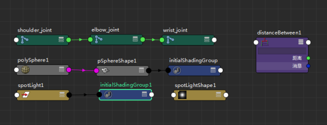
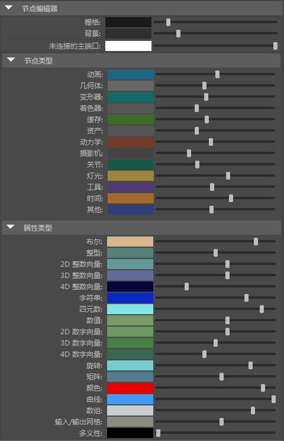

为方便识别，不同节点类型以不同颜色着色。例如，动画节点是浅蓝色、关节是绿色、灯光是米黄色。

若要查看列表或更改节点颜色，请打开“节点编辑器”(Node Editor)，选择
颜色设置(Color Settings)。在
“常规”(General)选项卡上，展开
“节点编辑器”(Node Editor)区域，再展开
“节点类型”(Node Types)区域，可以看到用于每个节点类型的默认颜色的列表。您可以单击颜色样本，使用
“颜色选择器”(Color Chooser)选择一种颜色来自定义每个节点类型的颜色。

“颜色设置”(Color Settings)中的“节点编辑器”(Node Editor)颜色列表。